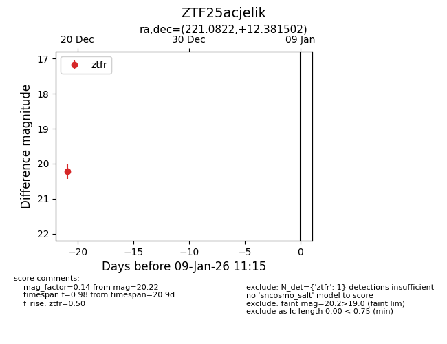
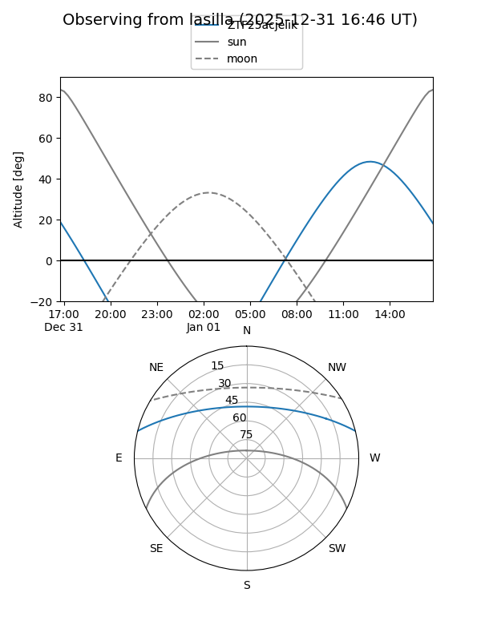
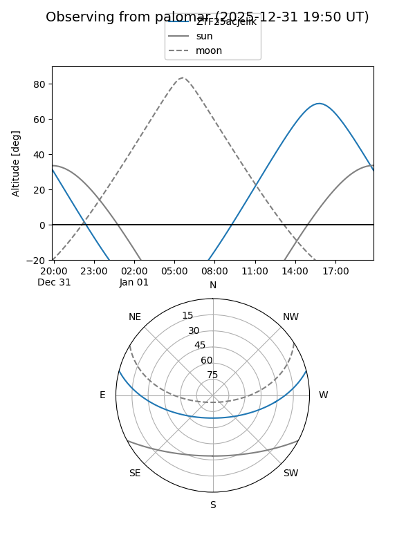

ZTF25acjelik
Target ZTF25acjelik at 2025-12-19 13:47
Aliases and brokers:
FINK: fink-portal.org/ZTF25acjelik
Lasair: lasair-ztf.lsst.ac.uk/objects/ZTF25acjelik
ALeRCE: alerce.online/object/ZTF25acjelik
alt names
ZTF25acjelik (ztf,fink_ztf)
Coordinates:
equatorial (ra, dec) = 221.0822,+12.38150
equatorial (HMS+DMS) = 14:44:19.74,+12:22:53.41
galactic (l, b) = (9.3529,+59.73636)
Flags:
Photometry:
last ztfr=20.22
1 ztfr detections
Lightcurve

Visibility


Additional plots